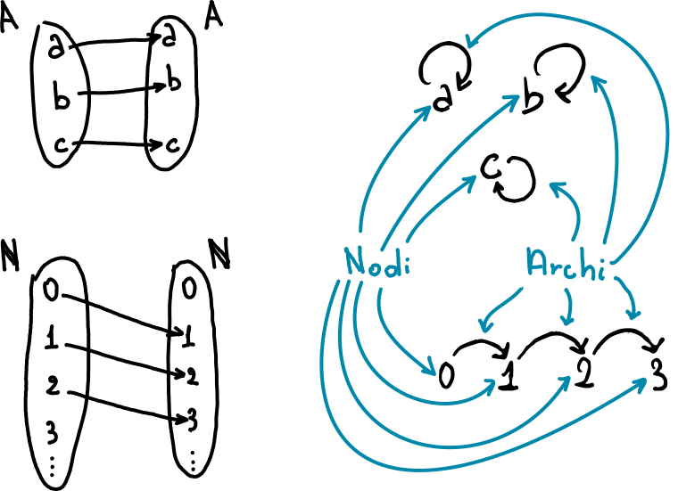
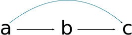
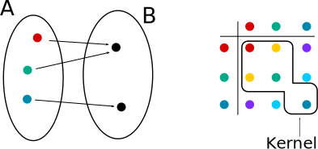
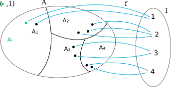

Relazioni su insiemi¶
Riprendiamo il concetto di relazione, e per agevolare la lettura, anche la sua definizione:
Definizione di Relazione
Una relazione \(R\) tra l'insieme \(A\) e l'insieme \(B\) è un sottoinsieme del prodotto cartesiano \(A \times B\), quindi \(R \subseteq A \times B\).
Indichiamo poi l'insieme di tutte le relazioni tra \(A\) e \(B\) con la notazione \(Rel(A,B)\).
Indichiamo quindi che \(R\) è una relazione tra \(A\) e \(B\) scrivendo \(R \in Rel(A,B)\), o più comunemente:
\(R: A \leftrightarrow B\)
Dove \(A\) è detto insieme di partenza e \(B\) insieme di arrivo.
Ovviamente possiamo sostituire l'insieme \(B\) con \(A\) e mantenere la stessa definizione e tutte le proprietà che abbiamo visto nei capitoli precedenti.
Per quanto riguarda le relazioni su loro stessi, i classici diagrammi di Eulero-Venn possono essere rappresentati come grafi:

Gli elementi dell'insieme vengono chiamati nodi, mntre gli elementi di \(R\) sono rappresentati come frecce e vengono chiamati archi.
Proprietà di relazioni su un insieme¶
Vediamo ora la relazione riflessiva
Relazione riflessiva
Una relazione \(R: A \leftrightarrow A\) si dice riflessiva se per ogni elemento \(a \in A\):
Un esempio di relazione rilessiva è la relazione identità \(Id_A: A \leftrightarrow A\) e la relazione completa \(A \times A: A \leftrightarrow A\)
La relazione \(\varnothing: A \leftrightarrow A\) è riflessiva solo quando \(A = \varnothing\)
Fondamentalmente, una relazione \(R: A \leftrightarrow A\) per essere riflessiva deve contenere la relazione identità \(Id_A \subseteq A\)
Relazione transitiva
Una relazione \(R: A \leftrightarrow A\) si dice transitiva quando per tutti gli elementi \(a,b,c \in A\), se \((a,b) \in R\) e \((b,c) \in R\), allora \((a,c) \in R\)
Per ogni insieme, la relazioni di identità \(Id_A: A \leftrightarrow A\), il prodotto cartesiano \(A \times A: A \leftrightarrow A\) e la relazione vuota \(\varnothing: A \leftrightarrow A\) sono relazioni transitive.
Un altro esempio di relazioni transitive sono \(< : A \leftrightarrow A\) e \(\leq : A \leftrightarrow A\).
Visalmente si può fare riferimento alle relazioni che percorrono 2 nodi in successione. Per ogniuno di questi casi, ci dovrà essere un arco ad unire gli "estremi":

Relazione simmetrica
Una relazione \(R: A \leftrightarrow A\) si dice simmetrica quando per tutti gli elementi \(a,b \in A\), se \((a,b) \in R\) allora \((b,a) \in R\)
Per ogni insieme, la relazioni di identità \(Id_A: A \leftrightarrow A\), il prodotto cartesiano \(A \times A: A \leftrightarrow A\) e la relazione vuota \(\varnothing: A \leftrightarrow A\) sono relazioni simmetriche.
Praticamente ogni arco deve avere un corrispettivo arco con l'orientazione opposta.
Relazione antisimmetrica
Una relazione \(R: A \leftrightarrow A\) si dice antisimmetrica quando per tutti gli elementi \(a,b \in A\), se \((a,b) \in R\) e \((b,a) \in R\) allora \(a=b\)
Per ogni insieme, la relazioni di identità \(Id_A: A \leftrightarrow A\) e la relazione vuota \(\varnothing: A \leftrightarrow A\) sono relazioni anti-simmetriche.
Non sempre il prodotto cartesiano \(A \times A: A \leftrightarrow A\) è antisimmetrico solo se vuoto o con cardinalità uno (da verificare)
Si può identificare facilmente una relazione antisimmetrica, verificando che non ci sono coppie di archi con orientamento opposto (quindi ad esempio \((a,b)\) e \((b,a)\)).
Teorema di caratterizzazione¶
Possiamo caratterizzare le proprietà come abbiamo fatto per le proprietà TUSI:
Prendendo in considerazione una relazione \(R: A \leftrightarrow A\):
- \(R\) è rifelssiva se e solo se \(Id_A \subseteq R\)
- \(R\) è transitiva se e solo se \(R; R \subseteq R\)
- \(R\) è simmetrica se e solo se \(R^{op} \subseteq R\)
- \(R\) è antisimmetrica se e solo se \(R \cap R^{op} \subseteq A\)
Le chiusure¶
Possiamo vedere le chiusure come delle relazioni "complementari" che fanno sì che una certa proprietà sia soddisfatta
Chiusura riflessiva¶
Data una relazione \(R: A \leftrightarrow A\), possiamo sempre renderla una chiusura riflessiva:
Chiusura riflessiva
La chiusura riflessiva di una relazione \(R: A \leftrightarrow A\) è la relazione \(R \cup Id_A\)
Per avere una chiusura riflessiva, è sufficiente inserire un arco in ogni elemento dell'insieme.
Chiusura simmetrica¶
Chiusura simmetrica
La chiusura simmetrica della relazione \(R: A \leftrightarrow A\) è la relazione \(R \cup R^{op}\)
Questa definizione fa sì che per ogni relazione, esista anche la relazione opposta
Chiusura transitiva¶
La chiusura transitiva è un attimo più complicata: un approccio naive potrebbe essere pensare di unire la relazione con la combinazione di sé stessa (\(R \cup R;R\)), tuttavia la relazione risultante non sarebbe necessariamente transitiva.
Prendiamo come esempio l'insieme \(A=\{1,2,3,4\}\) e la relazione \(R=\{(1,2), (2,3), (3,4)\}\). L'unione di \(R\) con \(R;R\) porterebbe ad avere \(R \cup \{(1,3), (2,4)\}\), ma non \((1,4)\) ad esempio. Per averla relativa dobbiamo concatenare ancora una volta la relazione: \(R \cup R;R \cup R;R;R = R \cup R;R \cup \{(1,4)\}\)
La chiusura transitiva è una composizione n-aria di relazione che può essere definita induttivamente:
Per ogni \(n \in \mathbb N\), definiamo \(R^n\):
- \(R^0 = id_A\) (clausola base)
- \(R^{n+1} = R;R^n\)
Per avere la chiusura transitiva, è ora sufficiente fare l'unione infinita di \(R^n\) con \(n = 1,2,...\) :
Chiusura transitiva
La chiusura transitiva di \(R: A \leftrightarrow A\), denotata \(R^+\) è rappresentata dalla relazione
Per ogni relazione \(R: A \leftrightarrow A\), vale che:
- \(R^+\) è transitiva
- \(R \subseteq R^+\)
- Per ogni relazione \(S: A \leftrightarrow A\), se \(R \subseteq S\) ed \(S\) è transitiva, allora \(R^+ \subseteq S\)
La stella di Kleene¶
Modificando la definizione appena data per la chiusura transitiva per avere \(\mathbb N\) invece di \(\mathbb N+\), otteniamo la relazione \(R^0 \cup R^+ = id_A \cup R^+\), definita chiusura riflessiva e transitiva
Chiusura riflessiva e transitiva
La chiusura e transitiva di \(R\), denotata come \(R^*\), è definita come
Valgono le stesse proprietà definite poco sopra per la chiusura transitiva
Questa è la più piccola relazione riflessiva e transitiva che contiere \(R\).
La stella di Krleene \(R^*\) è pensata come una sorta di unione illimitata di R.
Possiamo inoltre definire delle leggi:
| Legge | Formula |
|---|---|
| riflessività | \(id_A \subseteq R^*\) |
| transitività | \(R^*;R^* \subseteq R^*\) |
| chiusura | \(R \subseteq R^*\) |
| idempotenza | \((R^*)^* = R^*\) |
| *-id | \(id^*_A = id_A\) |
| *-compl | \((A \times A)^* = A \times A\) |
| *-vuoto | \(\varnothing^*_{A,A} = id_A\) |
| distributività di * | \(R^* \cup S^* \subseteq (R \cup S)^*\) \((R \cap S)^* \subseteq R^* \cap S^*\) \((R^*)^{op} = (R^{op})^*\) |
Relazioni di equivalenza¶
Relazione di equivalenza
Una relazione \(R: A \leftrightarrow A\) si dice di equivalenza se riflessiva, transitiva e simmetrica.
Per ogni insieme la relazione \(id_A: A \leftrightarrow A\) e \(A \times A: A \leftrightarrow A\) sono relazioni di equivalenza
Quindi, riprendendo parte del teorema di caratterizzazione:
- \(R\) è rifelssiva se e solo se \(Id_A \subseteq R\)
- \(R\) è transitiva se e solo se \(R; R \subseteq R\)
- \(R\) è simmetrica se e solo se \(R^{op} \subseteq R\)
Tutte e tre queste proprietà devono essere soddisfatte per definire la relazione come di equivalenza.
Kernel di una funzione¶
Kernel di una funzione
Il kernel della funzione \(f: A \rightarrow B\) è definita come:
Esempio di kernel

Dato un insieme \(A = \{a,b,c\}\),
un insieme \(B = \{ \alpha, \beta \}\)
ed una funzione \(f = \{ (a,\alpha), (b,\alpha), (c, \beta) \}\),
Il kernel della funzione sarà \(Ker(f) = \{(a,a),(b,b),(c,c),(a,b),(b,a) \}\)
Per ogni funzione \(f: A \rightarrow B\) vale che
- \(Ker(f) = f;f^{op}\)
- \(Ker(f)\) è una relazione di equivalenza
Queste due proposizioni possono essere trasformate in un teorema di caratterizzazione: tutte le relazioni di equivalenza possono rappresentare il kernel di qualche funzione.
Questo viene dimostrato anche facendo uso della nozione di classe di equivalenza:
Classe di equivalenza
Data la \(R: A \leftrightarrow A\) e \(a \in A\), la classe i R-equivalenza è
Questo può essere visto come ogni elemento in \(A\) che sia presente nella prima posizione di una coppia della relazione \(R\). Questa relazione ha come risultato tutti gli elementi al secondo posto nelle coppie.
Esempio di classe di equivalenza
Dato l'insieme \(A = \{a,b,c,d\}\) e la relazione \(R = id_A \cup {(a,b), (b, a)}\):
\(R = id_A \cup \{(a,b), (b,a)\}\)
\(R = \{(a,a), (b,b), (c,c), (d,d)\} \cup \{(a,b), (b,a)\}\)
\(R = \{(a,a), (b,b), (c,c), (d,d), (a,b), (b,a)\}\):
- \([a]_R = {a, b}\)
- \([b]_R = {b, a}\)
- \([c]_R = {c}\)
- \([d]_R = {d}\)
Per tutti gli insiemi A e per tutte le relazioni \(R: A \leftrightarrow A\), \(R\) è una relazione di equivalenza se e solo se esiste un insieme B ed una funzione \(f: A \rightarrow B\) tale che \(R = Ker(f)\).
Da rivedere - pagina 4-15 della dispensa.
Relazioni di equivalenza e partizioni¶
Una relazione di equivalenza è ciò che ci consente di raggruppare tutti quegli che condividono una certa proprietà (ad esempio i numeri pari, o che iniziano con un numero).
Data una relazione di equivalenza \(R: A \leftrightarrow A\), è possibile considerare l'insieme delle classi di R-equivalenza come
Possiamo notare come \(EC_R\) formi una partizione per ogni relazione di equivalenza \(R: A \leftrightarrow A\).
Insieme delle classi di equivalenza
Riprendendo l'esempio precedente, con \(A = \{a,b,c,d\}\) e \(R = id_A \cup \{(a,b), (b,a)\}\), \(EC_R\) sarà uguale a \(\{ \{a,b\}, \{c\}, \{d\} \}\).
Essendo insiemi infatti gli elementi non ripetuti non aggiungono nessun tipo di informazione.
Per tutti gli insiemi \(A\) e tutte le relazioni di equivalenza \(R: A \leftrightarrow A\), \(EC_R\) è una partizione.
Allo stesso modo, data una partizione di un insieme, è possibile stabilire una relazione di equivalenza:
Data una partizione \(\mathcal F = \{ X_i\}_{i \in I}\) dell'insieme \(A\), definiamo la relazione \(f_{\mathcal F}: A \leftrightarrow I\) come
Quello che abbiamo appena descritto ci permette di assegnare ad ogni elemento \(a\) di una sottopartizione \(X_i\) un valore in \(f_{\mathcal F}\). Quindi tutto gli elementi \(a\) in ogni sottopartizione (\(a \in X_i\)) avranno come immagine lo stesso valore in f, che è uguale all'indice che usiamo per riferirci alla sottopartizione.

Per tutti gli insiemi di A e tutte le partizioni \(\mathcal F = \{ X_i \}_{i \in I}\) di A, la relazione \(f_{\mathcal F}\) è una funzione.
Per essere una funzione, \(f_{\mathcal F}\) deve essere:
- Totale: dato che \(f_{\mathcal F} = \{ X_i \}_{i \in I}\) è una partizione di A, vale che \(A \subseteq \bigcup _ {X \in EC_R} X\), e quini per ogni \(a \in A\) esiste un \(X_i\) tale che \(a \in X_i\). Quindi per definizione di \(f_{\mathcal F}\) abbiamo che \((a,i) \in f_{\mathcal F}\)
- Univalente: visto che \(f_{\mathcal F} = \{ X_i \}_{i \in I}\) è una partizione di A, se \(i \neq j\), allora \(X_i \cap X_j = \varnothing\). Quindi per ogni \(a \in A\), esiste al più un \(i \in I\), tale che \(a \in X_i\), cioè esiste al più in \(i \in I\) tale che \((x,i) \in f_{\mathcal F}\)
Quindi la relazione corrispontende ad \(\mathcal F\) è il kernel di \(f_{\mathcal F}\).
Abbiammo quindi una biezione tra l'insieme delle relazioni di equivalenza su A (denotato da \(ERel(A)\)) e l'insieme delle partizioni su A (denotato da \(Part(A)\))
Questo principio è esattamente quello rappresentato dal grafico sopra, che quindi va a valere per ogni partizione esistente in A.
Per ogni insieme, vale quindi che
Relazioni di ordinamento¶
Relazione di ordinamento parziale¶
Relazione di ordinamento parziale
\(R: A \leftrightarrow A\) è una relazione di ordinamento parziale quando è riflessiva, transitiva e antisimmetrica
Un esempio di relazione parziale è la relazione \(\{(X,Y) \in \mathcal P(A) \times \mathcal P(A) | X \subseteq Y \}\)
Per le relazioni di ordinamento parziale, usiamo la notazione infissa: \(A \ R \ B \cong (a,b) \in R\)
Le reazioni di ordinamento sono in genere denotate dal simbolo \(\sqsubseteq\).
Si usa il simbolo \(\sqsubset\) per la relazione \(\sqsubset = \{ (x,y) | x \sqsubseteq y ~ e ~ x \neq y \}\).
Questa notazione è analoga alle notazioni \(<\) e \(\leq\) sui naturali.
C'è una grande differenza tra i simboli \(>\) e \(\leq\): per ogni coppia di numeri \((n,m) \in \mathbb N \times \mathbb N\), vale \(n \leq m\) e \(m \leq n\).
Relazione di ordinamento¶
Relazione di ordinamento
\(R: A \leftrightarrow A\) è una relazione di ordinamento quando:
\(\text{per tutti gli } (a,b)\in A \times A \text{ vale che } (a,b) \in R \text{ oppure } (b,a) \in R\)
\(R\) è un ordinamento se e solo se \(id_A \subseteq R\)
Ordinamento lessicografico¶
Un ordinamento lessicografico è un esempio particolare di ordinamento, utilizzato per ordinare le parole nei dizionari o negli elenchi.
\(s \sqsubseteq _{A^n} t\) se e solo se esiste un \(i \in \{ 0, ..., n \}\) tale che per tutti gli indici \(j < i\) vale che \(a_j = a^{'}_i\) e \(a_i \sqsubset a^{'}_i\)
Ordinamento lessicografico
Dato l'ordinamento \(\sqsubseteq _A : A \leftrightarrow A\), l'ordinamento lessicografico è definito come:
Per tutte le stringhe \(s=a_0 a_1 ... a_n\) e \(t=a_0 a_1 ... a_m\) in \(A^*\) si ha che \(s \sqsubseteq _{A^*} t\) se e solo se esiste un \(i \in \mathbb N\) tale che per tutti i \(j <i\), vale che \(a_j = a^{'}_j\) ed almeno una delle due condizioni è vera:
- \(a_i \sqsubset _A a^{'} _i\)
- \(i = n+1\) e \(n < m\)
Rivedere sezione sull'ordinamento